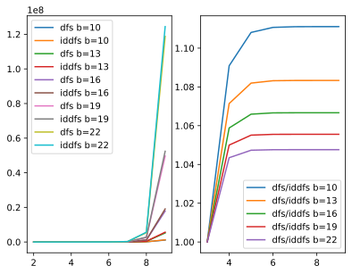

Iterative Deepening
Jacky Baltes
National Taiwan Normal University
Taipei, Taiwan
jacky.baltes@ntnu.edu.tw

Search Methods and Iterative Deepening
- Depth First Search
- Advantage: Amount of memory grows linearly with the depth of the search
- Disadvantage: May fall into a deep subtree
- Disadvantage: Usually does not find the shallowest/optimal solution
- Breadth First Search
- Advantage: Finds shallowest/optimal solution
- Disadvantage: Requires an exponential amount of memory
- Hill Climbing Search Search
- Advantage: Local search proceeds quickly
- Disadvantage: May get stuck in local minimum/maximum. Random restart to avoid
- Disadvantage: Not guaranteed to find shallowest/optimal solution
Iterative Deepening
Iterative Deepening
- Combines depth first and breadth first search
- Advantage: Finds optimal/shallowest solution
- Advantage: Amount of memory grows linearly with the depth of the search
- Advantage: Does not fall into a deep subtree
- Disadvantage: Increase in runtime. Iterative deepening is slower
Iterative Deepening
- Impose a depth limit for depth first search
- Obvious problem is that we cut out parts of the search space
- If the solution is in the part that we cut out, then the algorithm will fail to find it
- If we do not find a solution, then we increase the depth limit
- Trading off runtime for memory efficiency
Runtime Overhead of Iterative Deepening
- How much slower will our search be?
- Simplest case is a binary tree
- Branching factor \(b=2\), depth of the search \( d \)
- Number of leave nodes \( n_l \) at level \( l \), that is \[ n_l = 2^{l} \]
- Number of nodes searched in breadth first search \( n_e \) is solution is at level \( l \) is \[ \sum_{i=0}^{l} 2^{i} = 2^{l+1}-1 \]
- Number of nodes expanded in Iterative Deepening \[ \mbox{Limit 1}: (2^1 - 1) \\ \mbox{Limit 2}: (2^2 - 1) \\ \mbox{Limit 3}: (2^3 - 1) \\ ... \]
- Each level will be expanded l - i times \[ n_e = \sum_{i=0}^{l} (l-i)*2^{i} \approx 2^{l+1} \]
- Compare that to the cost of breadth first search \[ 2^{l+1} - 1 \]
- Even with a small branching factor of 2, 50% of the nodes are leaf nodes.
- So even if we expand the nodes in the upper layers of the tree often (worst case it would be l times for the root node), it will only add a small portion to the runtime.
def iddfs( b, d ):
sum = 0
for i in range( d+1 ):
for j in range( i+1 ):
sum = sum + dfs(b,j)
#print(f'IDDFS b={b}, d={d}, expands {sum} nodes' )
return sum
def dfs( b, d ):
exp = 0
for j in range( d ):
#print( f'Expand all nodes at level {j}, {b**j} nodes')
exp = exp + b ** j
#print( f'Depth first search to level {d} expands {exp} nodes')
return exp
b,d = 2,4
print( f'branching factor {b} and depth {d}, DFS {dfs(b,d)} IDDFS {iddfs(b,d)}')
branching factor 2 and depth 4, DFS 15 IDDFS 42
fig=plt.figure(dpi=200)
ax1 = fig.add_subplot(1,2,1)
bs=np.arange(10,24,3)
xs = np.arange(2,10)
ydfs = np.zeros((len(bs), len(xs)))
yiddfs = np.zeros((len(bs),len(xs)))
for bi in range(len(bs)):
b = bs[bi]
for i in range(len(xs)):
ydfs[bi,i] = dfs(b,i)
yiddfs[bi,i] = iddfs(b,i)
for bi in range(len(bs)):
ax1.plot(xs, ydfs[bi], label=f'dfs b={bs[bi]}' )
ax1.plot(xs, yiddfs[bi], label=f'iddfs b={bs[bi]}' )
ax1.legend()
ax2 = fig.add_subplot(1,2,2)
for bi in range(len(bs)):
ax2.plot(xs, yiddfs[bi]/ydfs[bi], label=f'dfs/iddfs b={bs[bi]}' )
ax2.legend()
dfsf1 = addJBFigure( "dfsf1", 0, 0, fig )
plt.close()
Overhead of Iterative Deepening Methods
- Even though it may sound like a big waste of runtime (a lot of extra work), the overhead for iterative deepening depth first search is dependent on the depth and the branching factor
- Worst case is for small branching factors (e.g., b=2), but for realistic branching factors (b>10) the overhead is less than 30%
- For a branching factor of b=22, overhead is only 8%